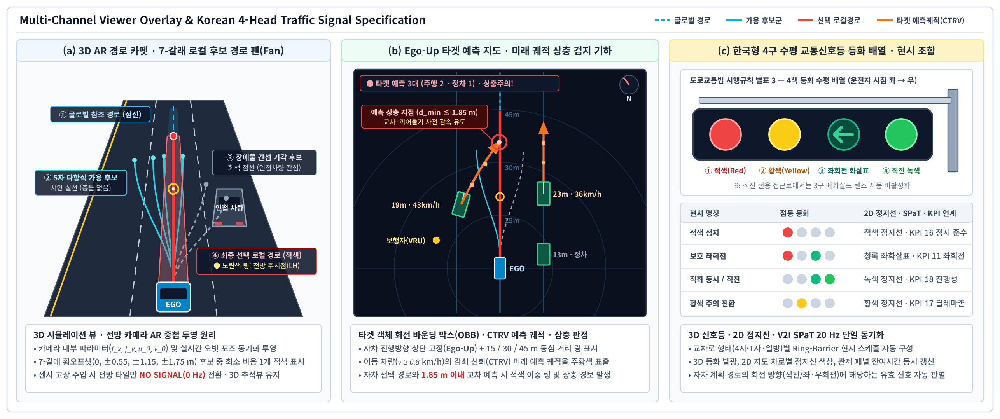
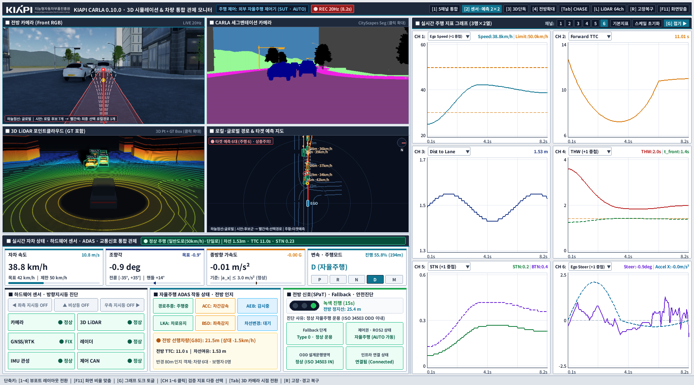
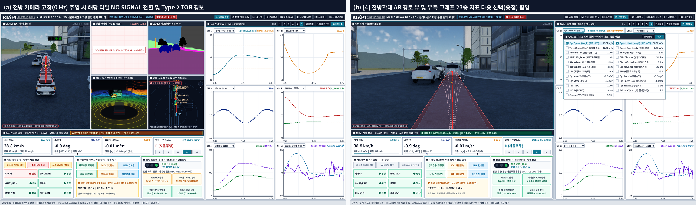
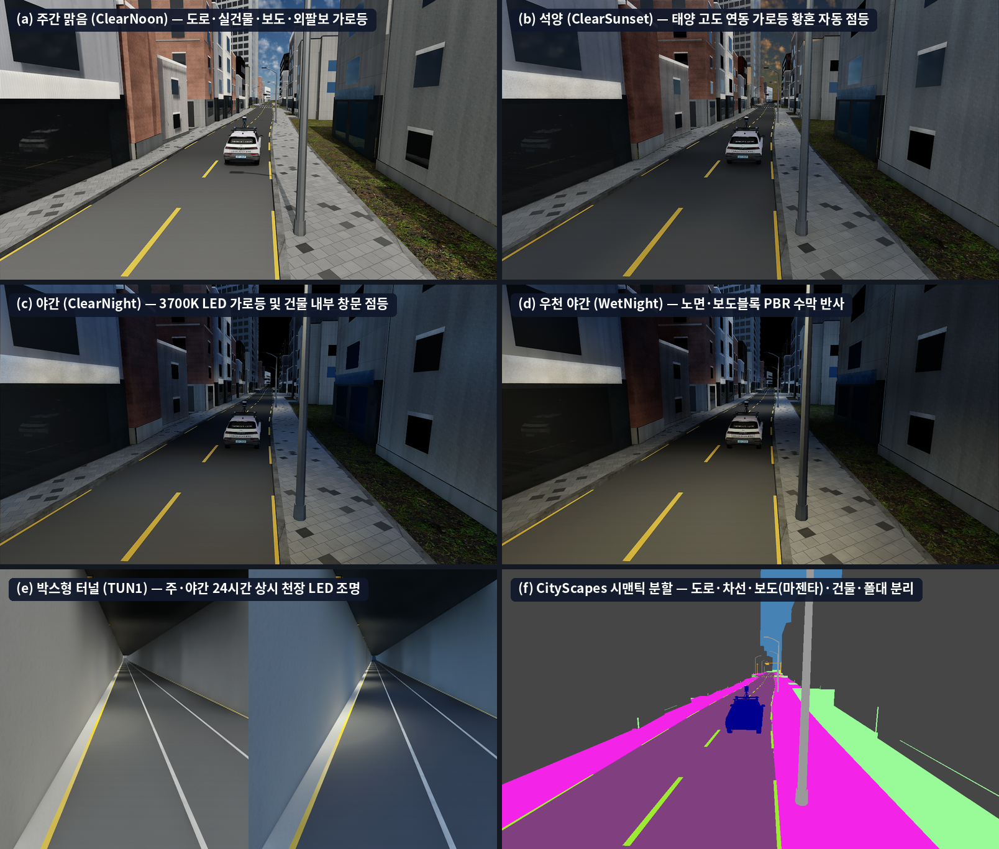

가상 주행 시뮬레이션(Tab 2) 사용 매뉴얼
권역 및 주행 경로(S→G) 설정, 3D 월드 로드, 차량·날씨(24종)·센서·주변교통 설정, 수동 타겟 객체 및 도로 인프라(V2I) 배치, 3D 관제 뷰어와 23종 실시간 파형 모니터 조작법을 단계별로 안내합니다.
![그림 1. [Tab 2: 가상 주행 시뮬레이션] 화면 — 상단 2열 툴바, 좌측 2D 정밀지도 뷰어, 우측 시나리오·타겟 객체·인프라 설정 패널.](../assets/img/ui/ui_tab2_workbench.png)
1. 상단 1·2열 툴바 기능
| 상단 1열 컨트롤 | 기능 및 사용법 |
|---|---|
구역 & [폴더] | 내장된 17개 권역(또는 전국 통합 지도)을 선택하거나 [폴더] 버튼으로 외부 정밀도로지도 폴더를 불러옵니다. |
반경 (65m) | 계획 경로 좌우로 3D 도로·건물·시설물을 생성할 폭(30 ~ 250 m)을 지정합니다(KIAPI 시험장 전용 맵에서는 전체 맵 로드). |
[① XODR 변환] | 선택된 경로(S→G)를 기준으로 OpenDRIVE 도로망과 주변 3D 환경 데이터를 생성합니다. |
[② CARLA 빌드] / [해제] | 3D 시뮬레이터를 기동하여 생성된 월드를 로드·연결하거나 연결을 해제합니다. |
[▶ 주행 시작] / [⏸ 일시정지] / [⏹ 정지] | 시뮬레이션 주행을 시작·일시정지·종료합니다. 주행 중에는 20Hz 주기로 차량·객체·신호 데이터가 자동 저장됩니다. |
[경로 초기화] | 지도에 지정한 출발(S)·목적지(G) 경로를 지우고 다시 설정합니다. |
[Pygame 창] | 별도 창으로 동작하는 5채널 통합 3D 시뮬레이션·타겟 예측 지도 및 6채널 파형 관제 모니터를 엽니다. |
[정량 검증 →] | 주행 완료 후 저장된 20Hz 기록을 [Tab 3: 정량 검증] 화면으로 전달하여 20개 KPI를 평가합니다. |
| 상단 2열 컨트롤 | 기능 및 사용법 |
|---|---|
차량 | 시험차량 3종 및 일반 차량 모델 중 자차(Ego) 블루프린트를 선택합니다 (차량 카탈로그 참조). |
제어 & [게인] | 폐루프 자율주행 시스템 연동 또는 내장 기준 제어기를 선택하고 세부 추종 게인을 조정합니다 (제어 모드 상세 참조). |
속도 (km/h) | 기본 목표 주행 속도(10 ~ 120 km/h)를 설정합니다. |
날씨 (24종) | 시간대(정오·석양·야간) 및 기상 프리셋을 실시간 전환합니다 (하단 5절 표 참조). |
LiDAR | 사용할 3D LiDAR 채널 구성(32ch / 64ch / 128ch)을 선택합니다 (센서 사양 참조). |
주변교통 · 대수 · [생성]/[제거] | 혼잡도(한산~정체)와 차량 수(0 ~ 500대)를 지정해 배경 교통류를 생성·제거합니다 (교통류 모델 참조). |
2. 좌측 2D 정밀지도 관제 뷰어 상세 명세
Tab 2 좌측의 2D 정밀지도 뷰어는 주행 전에는 출발(S)·목적지(G) 경로 설계 및 트리거·수동 객체 배치 도면으로 동작하며, 주행 시작 후에는 자차의 전방 인지 시야각(FOV), 실시간 추종 로컬 경로, 최우선 선행 차량(CIPV), 교차로 차로별 신호 현시를 한눈에 보여주는 전술 관제 상황판으로 동작합니다.
| 2D 정밀지도 오버레이 요소 | 시각 기호 · 색상 변화 규칙 | 관제 의미 및 활용 방법 |
|---|---|---|
| 배경 지도 & 도로 레이어 | 위성+하이브리드 / 위성 / 기본지도 / 벡터 CAD + ✓ XODR면 · 도로ID | 실제 항공영상 정합 상태 확인 또는 차로 경계·노면표시 중심의 공학 도면 시점 전환 |
| 주행 경로 & 3D 생성 버퍼 | 녹색 S(출발) → 적색 G(목적지) 실선, 차로변경 구간 38 m 곡선 전이 핀(P1, P2...), 반투명 회랑 외곽선 | 전역 기준 경로와 좌·우 3D 월드 생성 폭(기본 ±65 m) 사전 확인 |
| 전방 인지 시야각 콘 (FOV) | 전방 52 m · ±21° 부채꼴 — 청색(정상) → 황색(근접 주의 · TTC ≤ 3.5 s) → 적색(위험 · AEB 제동) | 자차 전방 인지 범위와 선행 타겟과의 충돌 위험 수준을 색상으로 즉시 식별 |
로컬 경로 & 전방 주시점(LH) | 적색 실선(실시간 추종 로컬 경로) + 황색 원형 마커(LH) | 차선 유지·장애물 회피 중 제어기가 실제로 추종하는 단기 궤적과 조향 목표점 확인 |
인지 타겟 & CIPV 락온 | 주변 차량·보행자 회전 박스 + 속도 벡터 화살표 + 최우선 선행차 CIPV 강조 테두리·거리 배지 | 다중 객체 중 종방향 안전거리(ACC/AEB) 제어 기준이 되는 주 타겟 판별 상태 확인 |
| 자차(Ego) 외곽 상태 색상 | 청록(정상 자율주행) · 황색(제어권 전환 요청 TOR) · 적색(비상정지 MRM/고장) · 보라(수동 개입) | 고장·ODD 이탈 주입 시 자율주행 시스템의 운용 모드 전이 여부를 지도 위에서 직관 확인 |
| 교차로 차로별 신호 정지선 | 각 진입 차로 정지선이 적색 · 황색 · 청록(좌회전 화살표) · 녹색으로 실시간 변경 | 3D 신호등 및 V2I SPaT와 20Hz로 동기화된 차로별 유효 통행 신호 확인 |
3. 독립 5채널 3D 시뮬레이션 & 차량 통합 관제 모니터 ([Pygame 창]) 상세 가이드
상단 1열의 [Pygame 창] 버튼을 클릭하면 실행되는 독립 관제 모니터는 ① 좌측 상단 5채널 멀티 뷰포트, ② 좌측 하단 차량·센서·ADAS·신호·폴백 통합 진단 콘솔, ③ 우측 3행×2열(최대 6채널) 실시간 지표 오실로스코프의 3개 영역으로 구성됩니다(영역 경계선을 마우스로 드래그하여 가로·세로 비율 실시간 조절 가능).

![그림 3. [1] 5채널 통합 주행 실행 화면 — 좌측 대화면 CARLA 3D 시뮬레이션 뷰와 우측 2×2 서브 타일(전방 카메라 · 세그멘테이션 카메라 · 3D LiDAR 포인트클라우드(GT 포함) · 로컬·글로벌 경로 & 타겟 예측 지도), 하단 통합 진단판, 우측 6채널 실시간 지표 그래프.](../assets/img/ui/pygame_live_5ch_hud.png)
[1] 5채널 통합 주행 실행 화면 — 좌측 대화면 CARLA 3D 시뮬레이션 뷰와 우측 2×2 서브 타일(전방 카메라 · 세그멘테이션 카메라 · 3D LiDAR 포인트클라우드(GT 포함) · 로컬·글로벌 경로 & 타겟 예측 지도), 하단 통합 진단판, 우측 6채널 실시간 지표 그래프.3.1 화면 레이아웃([1]~[4]) 및 5개 시각 채널별 기호 명세
| 레이아웃 단축키 / 버튼 | 화면 분할 구성 | 주요 활용 목적 및 마우스 조작 |
|---|---|---|
[1] 5채널 통합 (기본) | 좌측 44% 메인 뷰(CARLA 3D 시뮬레이션 뷰) + 우측 56% 2×2 서브 타일 4개 동시 표출 | 3D 주행 상황과 전방·세그멘테이션·라이다·예측 지도를 한 화면에서 통합 관제 (우측 서브 타일 클릭 시 좌측 메인 슬롯과 위치 맞교환) |
[2] 센서·예측 2×2 | 전방 카메라(AR 경로) · 세그멘테이션 · 3D LiDAR(GT) · 타겟 예측 지도 4등분 | 인지 센서 출력과 객체 미래 예측 궤적 상충 여부를 큰 화면으로 정밀 점검 |
[3] 3D단독 | 전체 CARLA 3D 시뮬레이션 뷰 + 우측 하단 타겟 예측 지도 소형 PIP 오버레이 | 차량 거동·주변 도심 환경 중심 관찰 및 데모 시연 (좌클릭 드래그: 3D 시점 회전 · 휠: 줌 · 휠 클릭: 시점 초기화) |
[4] 전방확대 | 전체 전방 카메라 (Front RGB) + 3D AR 후보·선택 경로 카펫 | 운전자 시점 전방 신호등·표지판 시인성 및 차로 추종·회피 경로 정합성 집중 확인 |
| 채널 명칭 | 표시 데이터 및 시각 기호 (색상 범례) | 센서 고장 · 특수 상황 동작 |
|---|---|---|
| ① CARLA 3D 시뮬레이션 뷰 | [Tab] 키로 후방 추적(Chase) · 자유 시점(Free) · 상공 조감도(Top-Down) 전환. 노면 위에 하늘색 점선(글로벌 참조 경로), 시안 실선(충돌 없는 5차 다항식 로컬 후보 경로), 회색 점선(주변 차량 간섭으로 기각된 후보 경로), 적색 실선·반투명 카펫(최종 선택 로컬 경로), 황색 이중 링(전방 주시점 LH)을 투영 | 단일 카메라·라이다 고장 주입 중에도 관제용 제3자 3D 추적 시점은 끊김 없이 유지되어 차량의 실제 물리 거동을 관찰 가능 |
| ② 전방 카메라 (Front RGB) | 전방 유리창 상단 시점(FOV 68°, 20 Hz) 실사 주행 영상 위에 7-갈래 로컬 후보 경로 팬(Fan)과 최종 선택 적색 경로 카펫을 카메라 내부 파라미터 기준으로 정합 표시 | 카메라 고장(fault_cam_stop) 주입 시 즉시 적색 격자 ⚠ CAMERA SENSOR FAULT INJECTED (0.0 Hz — NO SIGNAL) 화면으로 전환 |
| ③ CARLA 세그멘테이션 카메라 | 전방 카메라와 동일한 광학축에서 픽셀 단위 의미론적 객체 분류 결과 표시 — 보라(차도), 분홍(보도·연석), 남색(차량), 적색(보행자), 녹갈색(가로수·식생), 황색(교통표지·신호기), 회색(건물·지주) | 야간·역광·악천후 조건에서 카메라 인지 영역 내 차로·보도·차량·신호기의 실제 가시 픽셀 점유 확인 |
| ④ 3D LiDAR 포인트클라우드 (GT 포함) | [L] 키로 32ch / 64ch / 128ch 모델 실시간 전환. 배경 RGB 윤곽선 간섭을 배제한 순수 3차원 레이저 점군 위에 주변 객체의 녹색 3D 지향 바운딩 박스(8정점·12모서리 3D OBB + 전방 헤딩 스템) 및 실시간 차속 태그(예: 37km/h) 표시 | 단일 라이다 드롭아웃(fault_single_lidar) 주입 시 FAULT MASK ACTIVE 경보 화면으로 전환되어 다중 센서 융합 폴백 시험 지원 |
| ⑤ 로컬·글로벌 경로 & 타겟 예측 지도 | 자차 진행방향 상단 고정(Ego-Up) 전술 지도: 15 / 30 / 45 m 동심원 거리 링, 우측 상단 회전식 N 방위계, 정밀지도 차선 중심선, 자차 경로(하늘 점선 글로벌 · 시안/회색 후보군 · 적색 선택 경로), 녹색 회전 바운딩 박스(차량 + 헤딩 틱 + 거리·속도 라벨), 황색 원(보행자), 주황색 실선·화살표(이동 차량 v ≥ 0.8 km/h의 3.0초 감쇠 선회 CTRV 미래 예측 궤적) 표시 | 타겟의 주황색 미래 예측 궤적이 자차 선택 적색 경로의 1.85 m 이내로 접근·교차하면 교차 지점에 적색 이중 경보 링이 점등되고 상단에 ● 타겟 예측 N대 · 상충주의! 배너가 자동 표출됨 |

[2] 센서·예측 2×2 균등 분할 화면 — 전방 AR 경로 뷰, 시맨틱 세그멘테이션, 3D LiDAR(3D GT 바운딩 박스 포함), Ego-Up 타겟 미래 예측 지도를 동일 크기로 확대 비교.3.2 하단 통합 진단 콘솔 및 우측 다중 중첩 오실로스코프
우측 그래프 영역은 상단 채널: [1~6] 버튼으로 표시 개수를 조절할 수 있으며, 각 채널의 드롭다운 박스를 클릭하면 23종 물리량·안전지표 중 원하는 신호들을 복수 체크하여 단일 그래프 위에 동시 중첩(제1신호 실선 + 제2신호 점선 + 법규 임계 기준선)할 수 있습니다.
| 하단 통합 관제 콘솔 구역 | 세부 표시 항목 | 상태 색상 및 판독 기준 |
|---|---|---|
| 상단 실시간 주행 판정 배너 | 도로 유형(일반도로/보호구역 · 단일로/교차로), 제한속도, 차선 여유거리, 전방 TTC, STN 및 현재 안전 판정 요약 | 정상(녹색) · 근접/주의(황색) · KPI 위반 또는 제어권 전환/비상정지 발생(적색 강조) |
| 1열 4대 주행 계기 카드 | ① 자차 속도(현재/목표/제한속도 바) · ② 조향각(전륜각·목표각·조향핸들각) · ③ 종방향 가속도(m/s² · G 환산) · ④ 변속·주행모드(P·R·N·D·M 및 잔여 거리·진행률 %) | 자율주행 제어 명령에 대한 차량 동역학의 실제 추종 응답성 및 승차감 범위(|a_x| ≤ 3.0 m/s²) 확인 |
| 2열 좌측: 하드웨어 센서 · 등화 진단 | 좌·우 방향지시등 및 비상등 점멸 인디케이터 + 6대 핵심 모듈(카메라 · 3D LiDAR · GNSS/RTK · 레이더 · IMU 관성 · 제어 CAN) 상태 카드 | 모듈 정상 시 녹색(정상 / FIX), 고장 시나리오 발동 시 해당 모듈 카드가 즉시 적색(단절 / 고장)으로 전환 |
| 2열 중앙: ADAS 작동 · 전방 인지 요약 | 경로추종 · ACC · AEB · LKA · BSD · 차선변경 6개 작동 상태 칩 + 최우선 선행 타겟(CIPV) 상대거리·상대속도·TTC·반경 80m 내 객체 수 | 선행차 추종 감속 시 ACC: 차간감속, 좌·우 사각지대 차량 존재 시 BSD: 좌/우감지(황색), 긴급 제동 시 AEB: 제동개입(적색) 점등 |
| 2열 우측: 전방 신호(SPaT) · Fallback 진단 | 3구/좌화살표 신호등 아이콘 + 잔여시간(초) + 정지선 거리(m) + 진단 사유 텍스트 + 4분할 안전 상태(Fallback 단계 Type 0~3 · 제어권 상태 · ODD 설계운행영역 · 인프라 연결 상태) | 전방 교차로 SPaT 상태와 현재 활성화된 안전 폴백 등급 배지·진단 사유를 실시간 표출 (단계별 폴백 판정 기준 참조) |

NO SIGNAL로 전환되고 하단 콘솔에 Type 2 TOR 경보가 점등된 모습, (b) [4] 전방확대 뷰 및 우측 그래프 23종 지표 다중 체크(중첩 비교) 팝업.| 분류 | 3D 뷰어 오실로스코프 선택 가능 신호 (23종) | 표시 내용 |
|---|---|---|
| 속도 | Ego Speed (km/h), Ego Speed (m/s), Target Speed (km/h), Speed Limit (km/h), Speed Over (km/h) | 현재 차속, 목표 속도, 구간 제한속도 및 초과량 |
| 가감속 · 조향 | Ego Accel X, Ego Accel Y, Ego Steer | 종·횡방향 가속도(m/s²) 및 조향각 |
| 추종 · 간격 | Forward TTC, TTC, THW, UN R157 t_front, RSS MIN, PICUD, CIPV Distance | 전방 충돌예상시간, 차두시간, RSS 여유거리 및 선행차 거리 |
| 회피 위협도 | STN, BTN | 조향·제동 회피 요구량 비율 (임계선 1.0) |
| 차로 · 정지선 | Dist to Lane, Dist to Centerline, Dist to Edge, Dist to Stopline | 차선·중앙선·도로경계·정지선 이격거리(m) |
| 센서 · 폴백 | Camera FPS, Fallback Type | 카메라 수신 프레임률 및 안전 폴백 단계(0~3) |
4. 수동 타겟 객체 및 도로 인프라(V2I) 배치 (우측 하위 탭 2)
우측 상단 지도 클릭 모드를 3. 객체·인프라 배치로 바꾸고 하위 탭 [2. 타겟 객체 · 인프라 배치 설정]을 열면 원하는 지점에 개별 객체와 인프라 구역을 직접 배치할 수 있습니다:
- 보행자 배치: 생성 위치와 이동 목표점을 지도에 찍어
제자리 대기,목표점 보행, 또는자차 근접 시 보행 출발조건을 설정합니다. - 타겟 차량 배치: 차선을 클릭하면 도로 방향에 맞춰 선택 차종이 생성되며, 전방 60m 자동 경로 또는 연속 경유점 지정,
180° 방향 반전,정차 대기 / 경로 주행 / 자차 근접 출발모드를 지원합니다. - 도로 인프라(RSU) 구역 및 연결 상태: 교차로 중심과 검지 반경, 협동 감속 목표 속도를 지정하거나 인프라 무선 연결/단절 상태를 전환하여 통신 단절 시 감속 운행 전환 여부를 시험합니다.
- 초기화 버튼: 하단
[위치 리스폰]으로 수동 객체들을 시작 위치로 되돌리거나, 우측 상단[고장·상태 복구]로 주입된 고장·날씨 변화를 초기 상태로 복원합니다.
5. 기상 프리셋(24종) 일람
기상 프리셋 변경에 따른 가로등 자동 디밍 곡선은 신호등·표지판·가로등 문서를, 강우·안개 시 라이다 광학 감쇠 모델은 가상 센서 문서를 참조하십시오.
| 시간대 구분 | 선택 가능한 기상 프리셋 (24종) | 주요 환경 파라미터 변화 |
|---|---|---|
| 정오 (Noon) | 맑음 · 쾌청 (기본), 맑은 정오, KIAPI 흐림, 흐린 정오, 젖은 노면 정오, 젖고 흐린 정오, 약한 비 정오, 보통 비 정오, 폭우 정오 | 고고도 태양광(α_sun ≥ 60°), 운량(0~90%), 노면 수막·습윤율 및 강수 강도(0~100%) 단계 조절 |
| 석양 (Sunset) | 맑은 석양, 흐린 석양, 젖은 노면 석양, 젖고 흐린 석양, 약한 비 석양, 보통 비 석양, 폭우 석양 | 저고도 역광 태양각(α_sun ≈ 5~15°) 및 박명 조도 전환 구간 설정 |
| 야간 (Night) | 맑은 야간, 흐린 야간, 젖은 노면 야간, 젖고 흐린 야간, 약한 비 야간, 보통 비 야간, 폭우 야간 | 야간 태양고도(α_sun < -5°) 전환 및 습윤 아스팔트 정반사 계수 증가 |
| 시정 제한 | 모래폭풍 (DustStorm) (+ ODD 시나리오 안개·결빙 연동) | 대기 산란 밀도 증가에 따른 시정 거리 단축 |
